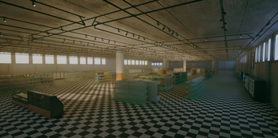
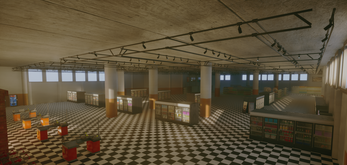
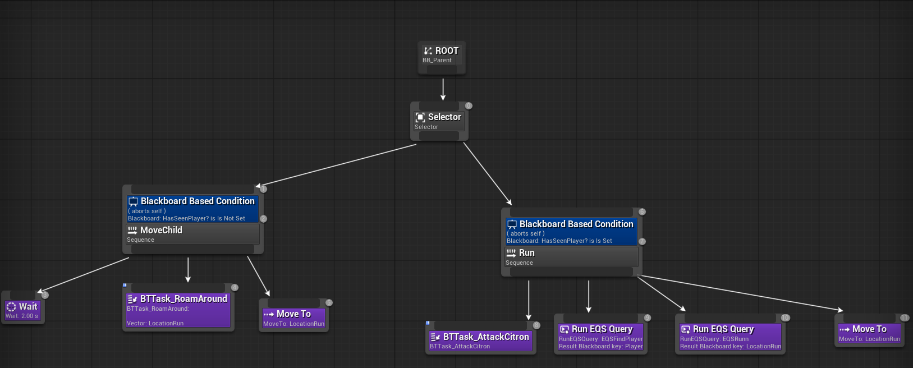

We are a child looking for groceries for our mother, but our imagination seems to bring the items on the list to life.
Our goal is to collect all the food items using our cart by bumping into them.
This project was created as part of the Studio Mercier Game Jam 2025, whose theme was “Everything is Alive”, and was developed within 36 hours.
The game was created by a team of three and finished 3rd among four participating French schools.


My Role
Developed the full AI system for fleeing enemies. The challenge was to trigger panicked chases with player detection, delivering fun, randomized yet controlled behavior to ensure balanced gameplay difficulty.
 Implemented the complete AI logic for enemy behaviors, including player detection, panicked pursuits, and evasion mechanics. This system delivers fun, randomized yet balanced AI for controlled difficulty and immersion.
The left panel handles the AI's solo wandering behavior, while the right implements the full panic-run system powered by EQS (Environment Query System) for dynamic, intelligent escape paths.
Technologies
Unreal Engine 5
Blueprint
Github
This 36-hour game project was a very enriching experience. It allowed me to prove that, within a limited timeframe, I was able to develop an AI system and refine it through polishing to create a fun and engaging experience, while meeting a detailed set of requirements during a Game Jam with a small team of three people.